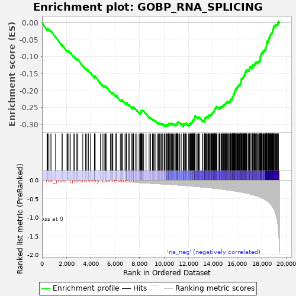
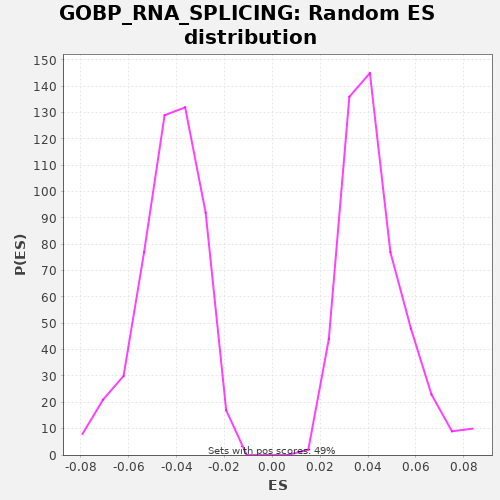

| | | Dataset | A_X_tradeoff |
| Phenotype | NoPhenotypeAvailable |
| Upregulated in class | na_neg |
| GeneSet | GOBP_RNA_SPLICING |
| Enrichment Score (ES) | -0.30655357 |
| Normalized Enrichment Score (NES) | -7.168252 |
| Nominal p-value | 0.0 |
| FDR q-value | 0.0 |
| FWER p-Value | 0.0 |
Table: GSEA Results Summary

Fig 1: Enrichment plot: GOBP_RNA_SPLICING
Profile of the Running ES Score & Positions of GeneSet Members on the Rank Ordered List
| SYMBOL | RANK IN GENE LIST | RANK METRIC SCORE | RUNNING ES | CORE ENRICHMENT | | 1 | BCAS2 | 408 | -0.002 | -0.0190 | No |
| 2 | SRSF11 | 433 | -0.002 | -0.0179 | No |
| 3 | TSEN2 | 455 | -0.003 | -0.0165 | No |
| 4 | CPSF3 | 545 | -0.003 | -0.0188 | No |
| 5 | USP39 | 653 | -0.004 | -0.0220 | No |
| 6 | RAVER2 | 737 | -0.004 | -0.0240 | No |
| 7 | JMJD6 | 1108 | -0.006 | -0.0410 | No |
| 8 | PRX | 1640 | -0.009 | -0.0664 | No |
| 9 | ZBTB7A | 1655 | -0.009 | -0.0648 | No |
| 10 | GEMIN8 | 2045 | -0.011 | -0.0828 | No |
| 11 | AHNAK | 2089 | -0.012 | -0.0826 | No |
| 12 | CLASRP | 2126 | -0.012 | -0.0821 | No |
| 13 | SLC39A5 | 2213 | -0.012 | -0.0842 | No |
| 14 | SNRNP48 | 2343 | -0.013 | -0.0886 | No |
| 15 | PRPF31 | 2608 | -0.015 | -0.1000 | No |
| 16 | SNRPB | 2659 | -0.015 | -0.1002 | No |
| 17 | GEMIN4 | 2816 | -0.016 | -0.1060 | No |
| 18 | SCNM1 | 2913 | -0.017 | -0.1086 | No |
| 19 | DDX41 | 2938 | -0.017 | -0.1075 | No |
| 20 | CIR1 | 3339 | -0.020 | -0.1261 | No |
| 21 | USB1 | 3570 | -0.021 | -0.1357 | No |
| 22 | CTNNBL1 | 3632 | -0.022 | -0.1365 | No |
| 23 | NCBP2 | 3783 | -0.023 | -0.1420 | No |
| 24 | RALY | 3793 | -0.023 | -0.1400 | No |
| 25 | PPIH | 3965 | -0.024 | -0.1466 | No |
| 26 | SNUPN | 4290 | -0.027 | -0.1612 | No |
| 27 | SRRM2 | 4310 | -0.027 | -0.1598 | No |
| 28 | EIF4A3 | 4315 | -0.027 | -0.1576 | No |
| 29 | SRPK3 | 4355 | -0.028 | -0.1572 | No |
| 30 | POLR2K | 4780 | -0.031 | -0.1771 | No |
| 31 | SUGP1 | 4939 | -0.033 | -0.1830 | No |
| 32 | SNRPG | 5075 | -0.034 | -0.1876 | No |
| 33 | LSM2 | 5085 | -0.034 | -0.1857 | No |
| 34 | GEMIN7 | 5158 | -0.035 | -0.1871 | No |
| 35 | SMU1 | 5219 | -0.036 | -0.1878 | No |
| 36 | HSPA1A | 5302 | -0.037 | -0.1897 | No |
| 37 | SRSF3 | 5604 | -0.040 | -0.2031 | No |
| 38 | PPIL3 | 5721 | -0.042 | -0.2068 | No |
| 39 | CLK4 | 5756 | -0.042 | -0.2061 | No |
| 40 | THOC6 | 5807 | -0.043 | -0.2063 | No |
| 41 | LSM4 | 6045 | -0.046 | -0.2164 | No |
| 42 | LSM3 | 6082 | -0.046 | -0.2158 | No |
| 43 | LSM7 | 6085 | -0.046 | -0.2135 | No |
| 44 | SRPK2 | 6414 | -0.050 | -0.2283 | No |
| 45 | ESS2 | 6480 | -0.051 | -0.2293 | No |
| 46 | POLR2F | 6542 | -0.052 | -0.2301 | No |
| 47 | ARL6IP4 | 6575 | -0.053 | -0.2294 | No |
| 48 | ZMAT5 | 6581 | -0.053 | -0.2272 | No |
| 49 | SNU13 | 6798 | -0.055 | -0.2362 | No |
| 50 | WDR83 | 6894 | -0.057 | -0.2388 | No |
| 51 | SF3B5 | 6908 | -0.057 | -0.2370 | No |
| 52 | RSRC1 | 6928 | -0.057 | -0.2356 | No |
| 53 | AFF2 | 7094 | -0.060 | -0.2419 | No |
| 54 | NSRP1 | 7146 | -0.060 | -0.2421 | No |
| 55 | CPSF1 | 7367 | -0.064 | -0.2513 | No |
| 56 | NUDT21 | 7369 | -0.064 | -0.2489 | No |
| 57 | YJU2 | 7465 | -0.065 | -0.2515 | No |
| 58 | MBNL3 | 7483 | -0.065 | -0.2499 | No |
| 59 | METTL3 | 7486 | -0.065 | -0.2476 | No |
| 60 | CWC25 | 7633 | -0.067 | -0.2529 | No |
| 61 | SRSF12 | 7764 | -0.069 | -0.2573 | No |
| 62 | LARP7 | 7958 | -0.072 | -0.2650 | No |
| 63 | GTF2F1 | 8017 | -0.073 | -0.2657 | No |
| 64 | WBP4 | 8078 | -0.074 | -0.2664 | No |
| 65 | POLR2L | 8092 | -0.075 | -0.2647 | No |
| 66 | HMX2 | 8114 | -0.075 | -0.2633 | No |
| 67 | THOC5 | 8129 | -0.075 | -0.2617 | No |
| 68 | RP9 | 8131 | -0.075 | -0.2593 | No |
| 69 | MAGOH | 8169 | -0.076 | -0.2588 | No |
| 70 | SRSF7 | 8198 | -0.076 | -0.2579 | No |
| 71 | ZPR1 | 8236 | -0.077 | -0.2574 | No |
| 72 | RBMXL1 | 8327 | -0.079 | -0.2597 | No |
| 73 | HNRNPL | 8524 | -0.082 | -0.2676 | No |
| 74 | POLR2C | 8775 | -0.086 | -0.2783 | No |
| 75 | U2AF1 | 8859 | -0.088 | -0.2803 | No |
| 76 | XAB2 | 8886 | -0.088 | -0.2792 | No |
| 77 | SNRPE | 9048 | -0.091 | -0.2853 | No |
| 78 | MBNL2 | 9077 | -0.091 | -0.2843 | No |
| 79 | TXNL4A | 9155 | -0.093 | -0.2859 | No |
| 80 | DAZAP1 | 9248 | -0.094 | -0.2884 | No |
| 81 | SREK1IP1 | 9324 | -0.096 | -0.2899 | No |
| 82 | CLP1 | 9467 | -0.098 | -0.2949 | No |
| 83 | FASTK | 9530 | -0.099 | -0.2958 | No |
| 84 | ELAVL1 | 9546 | -0.100 | -0.2941 | No |
| 85 | CLK3 | 9635 | -0.102 | -0.2963 | No |
| 86 | BUD13 | 9710 | -0.103 | -0.2978 | No |
| 87 | GEMIN2 | 9796 | -0.105 | -0.2999 | No |
| 88 | SNRNP40 | 9831 | -0.106 | -0.2992 | No |
| 89 | SNRNP27 | 9854 | -0.106 | -0.2980 | No |
| 90 | CD2BP2 | 9915 | -0.107 | -0.2987 | No |
| 91 | ISY1 | 10030 | -0.110 | -0.3023 | No |
| 92 | RPS26 | 10034 | -0.110 | -0.3000 | No |
| 93 | LSM10 | 10083 | -0.111 | -0.3001 | No |
| 94 | RBM20 | 10192 | -0.113 | -0.3034 | No |
| 95 | ECD | 10200 | -0.113 | -0.3013 | No |
| 96 | HNRNPC | 10241 | -0.114 | -0.3010 | No |
| 97 | TXNL4B | 10319 | -0.116 | -0.3027 | No |
| 98 | DDX47 | 10344 | -0.116 | -0.3015 | No |
| 99 | BUD31 | 10352 | -0.116 | -0.2994 | No |
| 100 | THOC3 | 10378 | -0.117 | -0.2983 | No |
| 101 | CCDC130 | 10383 | -0.117 | -0.2961 | No |
| 102 | GPATCH1 | 10465 | -0.119 | -0.2980 | No |
| 103 | KHDRBS2 | 10494 | -0.119 | -0.2970 | No |
| 104 | THOC1 | 10576 | -0.121 | -0.2989 | No |
| 105 | SNRNP35 | 10591 | -0.121 | -0.2972 | No |
| 106 | PABPN1 | 10659 | -0.123 | -0.2983 | No |
| 107 | RBM41 | 10694 | -0.124 | -0.2977 | No |
| 108 | PCBP4 | 10755 | -0.125 | -0.2984 | No |
| 109 | POLR2H | 10811 | -0.127 | -0.2989 | No |
| 110 | SF3B4 | 10901 | -0.129 | -0.3011 | No |
| 111 | TRPT1 | 10914 | -0.130 | -0.2994 | No |
| 112 | GEMIN5 | 10983 | -0.131 | -0.3005 | No |
| 113 | AAR2 | 11027 | -0.132 | -0.3004 | No |
| 114 | SNRPB2 | 11038 | -0.133 | -0.2985 | No |
| 115 | PRPF38A | 11070 | -0.133 | -0.2977 | No |
| 116 | SF3B1 | 11076 | -0.134 | -0.2955 | No |
| 117 | RBMX2 | 11090 | -0.134 | -0.2938 | No |
| 118 | PRCC | 11129 | -0.135 | -0.2934 | No |
| 119 | CWC27 | 11154 | -0.136 | -0.2922 | No |
| 120 | POLR2J | 11255 | -0.138 | -0.2950 | No |
| 121 | PTBP2 | 11289 | -0.139 | -0.2944 | No |
| 122 | SUGP2 | 11408 | -0.142 | -0.2981 | No |
| 123 | RRAGC | 11569 | -0.146 | -0.3041 | Yes |
| 124 | DHX35 | 11573 | -0.146 | -0.3019 | Yes |
| 125 | HNRNPH2 | 11584 | -0.146 | -0.3000 | Yes |
| 126 | CIRBP | 11587 | -0.146 | -0.2977 | Yes |
| 127 | PLRG1 | 11644 | -0.148 | -0.2982 | Yes |
| 128 | RBM42 | 11704 | -0.149 | -0.2989 | Yes |
| 129 | PUF60 | 11752 | -0.151 | -0.2989 | Yes |
| 130 | SMN1 | 11776 | -0.151 | -0.2977 | Yes |
| 131 | PPWD1 | 11812 | -0.152 | -0.2972 | Yes |
| 132 | RBM4 | 11826 | -0.152 | -0.2954 | Yes |
| 133 | PCBP1 | 11994 | -0.157 | -0.3018 | Yes |
| 134 | PRPF40B | 12039 | -0.158 | -0.3017 | Yes |
| 135 | UBL5 | 12049 | -0.158 | -0.2997 | Yes |
| 136 | GTF2F2 | 12075 | -0.159 | -0.2986 | Yes |
| 137 | RBM7 | 12136 | -0.160 | -0.2994 | Yes |
| 138 | POLR2G | 12155 | -0.161 | -0.2979 | Yes |
| 139 | PPARGC1A | 12207 | -0.162 | -0.2982 | Yes |
| 140 | CACTIN | 12219 | -0.162 | -0.2963 | Yes |
| 141 | SNRPA1 | 12223 | -0.162 | -0.2941 | Yes |
| 142 | POLR2I | 12257 | -0.163 | -0.2934 | Yes |
| 143 | DCPS | 12307 | -0.165 | -0.2935 | Yes |
| 144 | FRG1 | 12328 | -0.165 | -0.2922 | Yes |
| 145 | SYMPK | 12343 | -0.166 | -0.2905 | Yes |
| 146 | SNRPD1 | 12355 | -0.166 | -0.2887 | Yes |
| 147 | CWC15 | 12368 | -0.166 | -0.2869 | Yes |
| 148 | USP49 | 12403 | -0.167 | -0.2862 | Yes |
| 149 | CLK2 | 12431 | -0.168 | -0.2852 | Yes |
| 150 | PRPF19 | 12462 | -0.169 | -0.2844 | Yes |
| 151 | PPIE | 12471 | -0.169 | -0.2824 | Yes |
| 152 | CWF19L1 | 12481 | -0.170 | -0.2805 | Yes |
| 153 | CRNKL1 | 12489 | -0.170 | -0.2784 | Yes |
| 154 | PDCD7 | 12516 | -0.171 | -0.2774 | Yes |
| 155 | U2AF1L4 | 12531 | -0.171 | -0.2757 | Yes |
| 156 | POLR2D | 12547 | -0.172 | -0.2741 | Yes |
| 157 | THOC7 | 12656 | -0.175 | -0.2773 | Yes |
| 158 | DDX1 | 12757 | -0.177 | -0.2802 | Yes |
| 159 | DDX20 | 12796 | -0.179 | -0.2797 | Yes |
| 160 | WT1 | 12835 | -0.179 | -0.2793 | Yes |
| 161 | ERN1 | 12844 | -0.180 | -0.2773 | Yes |
| 162 | LSM8 | 12933 | -0.182 | -0.2795 | Yes |
| 163 | RPS13 | 13151 | -0.189 | -0.2885 | Yes |
| 164 | DNAJC8 | 13176 | -0.190 | -0.2874 | Yes |
| 165 | SF3A2 | 13295 | -0.194 | -0.2911 | Yes |
| 166 | SLU7 | 13314 | -0.194 | -0.2897 | Yes |
| 167 | TSEN54 | 13331 | -0.195 | -0.2881 | Yes |
| 168 | DHX16 | 13335 | -0.195 | -0.2858 | Yes |
| 169 | USP4 | 13340 | -0.195 | -0.2836 | Yes |
| 170 | DBR1 | 13356 | -0.196 | -0.2820 | Yes |
| 171 | PRPF6 | 13375 | -0.196 | -0.2805 | Yes |
| 172 | TMBIM6 | 13390 | -0.197 | -0.2789 | Yes |
| 173 | REST | 13438 | -0.199 | -0.2789 | Yes |
| 174 | RBM11 | 13480 | -0.200 | -0.2786 | Yes |
| 175 | PCBP2 | 13496 | -0.200 | -0.2770 | Yes |
| 176 | SNRNP25 | 13539 | -0.202 | -0.2768 | Yes |
| 177 | FAM172A | 13600 | -0.204 | -0.2775 | Yes |
| 178 | PRKRIP1 | 13656 | -0.206 | -0.2780 | Yes |
| 179 | CLNS1A | 13662 | -0.206 | -0.2759 | Yes |
| 180 | HABP4 | 13665 | -0.206 | -0.2736 | Yes |
| 181 | RBMX | 13709 | -0.208 | -0.2734 | Yes |
| 182 | RNPC3 | 13716 | -0.208 | -0.2713 | Yes |
| 183 | ZBTB8OS | 13775 | -0.210 | -0.2719 | Yes |
| 184 | CPSF4 | 13831 | -0.212 | -0.2724 | Yes |
| 185 | TFIP11 | 13873 | -0.213 | -0.2721 | Yes |
| 186 | FUS | 13888 | -0.213 | -0.2705 | Yes |
| 187 | PQBP1 | 13908 | -0.214 | -0.2690 | Yes |
| 188 | SCAF1 | 13924 | -0.215 | -0.2674 | Yes |
| 189 | SF3A3 | 13948 | -0.215 | -0.2662 | Yes |
| 190 | HNRNPF | 13982 | -0.216 | -0.2655 | Yes |
| 191 | HNRNPA0 | 14023 | -0.218 | -0.2652 | Yes |
| 192 | SNW1 | 14025 | -0.218 | -0.2628 | Yes |
| 193 | CLK1 | 14056 | -0.219 | -0.2620 | Yes |
| 194 | SYF2 | 14081 | -0.220 | -0.2609 | Yes |
| 195 | SNRPD2 | 14109 | -0.221 | -0.2599 | Yes |
| 196 | IK | 14136 | -0.222 | -0.2588 | Yes |
| 197 | DDX39B | 14137 | -0.222 | -0.2564 | Yes |
| 198 | METTL16 | 14148 | -0.223 | -0.2545 | Yes |
| 199 | RBM3 | 14175 | -0.224 | -0.2534 | Yes |
| 200 | ZRSR2 | 14211 | -0.225 | -0.2529 | Yes |
| 201 | TGS1 | 14231 | -0.226 | -0.2515 | Yes |
| 202 | HNRNPH3 | 14242 | -0.226 | -0.2496 | Yes |
| 203 | CSTF1 | 14273 | -0.227 | -0.2487 | Yes |
| 204 | COIL | 14290 | -0.228 | -0.2471 | Yes |
| 205 | PPP1R9B | 14341 | -0.230 | -0.2474 | Yes |
| 206 | CDC40 | 14451 | -0.234 | -0.2507 | Yes |
| 207 | LSM1 | 14536 | -0.237 | -0.2527 | Yes |
| 208 | WTAP | 14539 | -0.237 | -0.2504 | Yes |
| 209 | MPHOSPH10 | 14551 | -0.238 | -0.2485 | Yes |
| 210 | SMNDC1 | 14588 | -0.240 | -0.2480 | Yes |
| 211 | YBX1 | 14672 | -0.243 | -0.2499 | Yes |
| 212 | METTL4 | 14692 | -0.245 | -0.2485 | Yes |
| 213 | CSTF2T | 14709 | -0.245 | -0.2469 | Yes |
| 214 | ZC3H10 | 14745 | -0.247 | -0.2464 | Yes |
| 215 | PRPF3 | 14767 | -0.248 | -0.2451 | Yes |
| 216 | RBM25 | 14844 | -0.251 | -0.2466 | Yes |
| 217 | GCFC2 | 14858 | -0.252 | -0.2449 | Yes |
| 218 | RRP1B | 14895 | -0.253 | -0.2444 | Yes |
| 219 | BRDT | 14908 | -0.254 | -0.2426 | Yes |
| 220 | PPIL1 | 14932 | -0.255 | -0.2414 | Yes |
| 221 | EFTUD2 | 14979 | -0.257 | -0.2414 | Yes |
| 222 | PSPC1 | 15005 | -0.258 | -0.2403 | Yes |
| 223 | PPP2CA | 15030 | -0.259 | -0.2391 | Yes |
| 224 | CELF5 | 15039 | -0.260 | -0.2371 | Yes |
| 225 | RNPS1 | 15079 | -0.261 | -0.2368 | Yes |
| 226 | GPKOW | 15104 | -0.262 | -0.2356 | Yes |
| 227 | HNRNPK | 15124 | -0.263 | -0.2342 | Yes |
| 228 | CDK12 | 15187 | -0.266 | -0.2350 | Yes |
| 229 | U2AF2 | 15193 | -0.266 | -0.2329 | Yes |
| 230 | RBM4B | 15256 | -0.269 | -0.2337 | Yes |
| 231 | HNRNPM | 15261 | -0.270 | -0.2315 | Yes |
| 232 | AKAP8L | 15331 | -0.273 | -0.2327 | Yes |
| 233 | HNRNPLL | 15395 | -0.276 | -0.2336 | Yes |
| 234 | TIA1 | 15419 | -0.277 | -0.2324 | Yes |
| 235 | RBM8A | 15430 | -0.277 | -0.2305 | Yes |
| 236 | RBM10 | 15432 | -0.278 | -0.2282 | Yes |
| 237 | MBNL1 | 15452 | -0.279 | -0.2267 | Yes |
| 238 | CDC5L | 15478 | -0.280 | -0.2256 | Yes |
| 239 | SNIP1 | 15519 | -0.282 | -0.2253 | Yes |
| 240 | AHNAK2 | 15573 | -0.284 | -0.2257 | Yes |
| 241 | SF3B6 | 15586 | -0.285 | -0.2239 | Yes |
| 242 | RBM14 | 15591 | -0.285 | -0.2217 | Yes |
| 243 | RBM22 | 15601 | -0.285 | -0.2198 | Yes |
| 244 | LSM6 | 15615 | -0.286 | -0.2180 | Yes |
| 245 | LSM5 | 15660 | -0.289 | -0.2179 | Yes |
| 246 | CWF19L2 | 15667 | -0.289 | -0.2158 | Yes |
| 247 | STRAP | 15678 | -0.289 | -0.2139 | Yes |
| 248 | DYRK1A | 15694 | -0.290 | -0.2123 | Yes |
| 249 | SF3B2 | 15700 | -0.290 | -0.2101 | Yes |
| 250 | TTF2 | 15747 | -0.293 | -0.2101 | Yes |
| 251 | PPP2R1A | 15753 | -0.293 | -0.2080 | Yes |
| 252 | PPP4R2 | 15761 | -0.294 | -0.2059 | Yes |
| 253 | RBM15 | 15794 | -0.295 | -0.2052 | Yes |
| 254 | HNRNPD | 15798 | -0.295 | -0.2030 | Yes |
| 255 | SART1 | 15811 | -0.296 | -0.2012 | Yes |
| 256 | RBFOX2 | 15814 | -0.296 | -0.1989 | Yes |
| 257 | WDR33 | 15864 | -0.299 | -0.1990 | Yes |
| 258 | POLR2A | 15887 | -0.300 | -0.1978 | Yes |
| 259 | MAGOHB | 15890 | -0.300 | -0.1954 | Yes |
| 260 | SNRPC | 15900 | -0.301 | -0.1935 | Yes |
| 261 | PRMT5 | 15948 | -0.303 | -0.1936 | Yes |
| 262 | RBM38 | 15982 | -0.305 | -0.1929 | Yes |
| 263 | ZMAT2 | 15984 | -0.305 | -0.1905 | Yes |
| 264 | PIK3R1 | 16015 | -0.306 | -0.1897 | Yes |
| 265 | DHX8 | 16019 | -0.307 | -0.1874 | Yes |
| 266 | SFSWAP | 16047 | -0.308 | -0.1864 | Yes |
| 267 | ZCCHC8 | 16088 | -0.310 | -0.1861 | Yes |
| 268 | SNRPA | 16112 | -0.312 | -0.1849 | Yes |
| 269 | WDR77 | 16138 | -0.313 | -0.1838 | Yes |
| 270 | PRPF4 | 16160 | -0.314 | -0.1825 | Yes |
| 271 | PRPF39 | 16178 | -0.315 | -0.1810 | Yes |
| 272 | NONO | 16264 | -0.320 | -0.1830 | Yes |
| 273 | RBM19 | 16266 | -0.320 | -0.1806 | Yes |
| 274 | SON | 16267 | -0.320 | -0.1782 | Yes |
| 275 | NOVA1 | 16296 | -0.322 | -0.1773 | Yes |
| 276 | POLR2E | 16303 | -0.322 | -0.1752 | Yes |
| 277 | PRDX6 | 16327 | -0.323 | -0.1740 | Yes |
| 278 | PHF5A | 16330 | -0.324 | -0.1717 | Yes |
| 279 | IWS1 | 16333 | -0.324 | -0.1694 | Yes |
| 280 | PRPF40A | 16336 | -0.324 | -0.1670 | Yes |
| 281 | CPSF7 | 16344 | -0.325 | -0.1650 | Yes |
| 282 | METTL14 | 16373 | -0.327 | -0.1641 | Yes |
| 283 | ZCRB1 | 16403 | -0.328 | -0.1632 | Yes |
| 284 | SREK1 | 16446 | -0.331 | -0.1630 | Yes |
| 285 | PPP1R8 | 16470 | -0.333 | -0.1617 | Yes |
| 286 | SNRPD3 | 16492 | -0.334 | -0.1604 | Yes |
| 287 | MTREX | 16518 | -0.335 | -0.1593 | Yes |
| 288 | CHERP | 16531 | -0.336 | -0.1575 | Yes |
| 289 | HTATSF1 | 16542 | -0.337 | -0.1557 | Yes |
| 290 | TRA2A | 16566 | -0.339 | -0.1544 | Yes |
| 291 | RTCB | 16611 | -0.342 | -0.1543 | Yes |
| 292 | RBM6 | 16614 | -0.343 | -0.1520 | Yes |
| 293 | IVNS1ABP | 16631 | -0.344 | -0.1505 | Yes |
| 294 | U2SURP | 16643 | -0.345 | -0.1486 | Yes |
| 295 | CCAR2 | 16645 | -0.345 | -0.1463 | Yes |
| 296 | RBM5 | 16682 | -0.348 | -0.1457 | Yes |
| 297 | PRPF18 | 16704 | -0.349 | -0.1444 | Yes |
| 298 | KHDC4 | 16726 | -0.351 | -0.1431 | Yes |
| 299 | SRSF10 | 16727 | -0.351 | -0.1407 | Yes |
| 300 | CPSF2 | 16751 | -0.352 | -0.1395 | Yes |
| 301 | FXR1 | 16765 | -0.353 | -0.1378 | Yes |
| 302 | RBM17 | 16880 | -0.361 | -0.1413 | Yes |
| 303 | CSTF2 | 16894 | -0.362 | -0.1396 | Yes |
| 304 | CWC22 | 16966 | -0.368 | -0.1409 | Yes |
| 305 | HNRNPA1 | 16993 | -0.371 | -0.1399 | Yes |
| 306 | PRPF38B | 16997 | -0.371 | -0.1376 | Yes |
| 307 | SRSF2 | 17000 | -0.371 | -0.1353 | Yes |
| 308 | CDK13 | 17001 | -0.371 | -0.1329 | Yes |
| 309 | PCF11 | 17038 | -0.374 | -0.1323 | Yes |
| 310 | SART3 | 17059 | -0.376 | -0.1310 | Yes |
| 311 | POLR2B | 17064 | -0.376 | -0.1288 | Yes |
| 312 | FAM98B | 17185 | -0.386 | -0.1327 | Yes |
| 313 | ZRANB2 | 17222 | -0.389 | -0.1321 | Yes |
| 314 | KHSRP | 17225 | -0.390 | -0.1298 | Yes |
| 315 | GEMIN6 | 17228 | -0.390 | -0.1275 | Yes |
| 316 | HNRNPUL1 | 17254 | -0.392 | -0.1264 | Yes |
| 317 | DHX38 | 17263 | -0.392 | -0.1244 | Yes |
| 318 | RBM28 | 17353 | -0.401 | -0.1267 | Yes |
| 319 | NCBP1 | 17365 | -0.403 | -0.1248 | Yes |
| 320 | RBFOX3 | 17381 | -0.404 | -0.1232 | Yes |
| 321 | SF3A1 | 17425 | -0.409 | -0.1231 | Yes |
| 322 | CSTF3 | 17431 | -0.409 | -0.1209 | Yes |
| 323 | TSEN15 | 17450 | -0.411 | -0.1194 | Yes |
| 324 | PAPOLA | 17475 | -0.414 | -0.1183 | Yes |
| 325 | CCAR1 | 17484 | -0.415 | -0.1163 | Yes |
| 326 | VIRMA | 17581 | -0.424 | -0.1189 | Yes |
| 327 | SRSF6 | 17591 | -0.426 | -0.1170 | Yes |
| 328 | FIP1L1 | 17605 | -0.427 | -0.1152 | Yes |
| 329 | SRPK1 | 17678 | -0.434 | -0.1166 | Yes |
| 330 | RBM39 | 17695 | -0.436 | -0.1150 | Yes |
| 331 | NOL3 | 17754 | -0.444 | -0.1157 | Yes |
| 332 | SRSF9 | 17783 | -0.447 | -0.1147 | Yes |
| 333 | SNRPN | 17785 | -0.447 | -0.1123 | Yes |
| 334 | HNRNPH1 | 17843 | -0.453 | -0.1129 | Yes |
| 335 | PRMT7 | 17856 | -0.455 | -0.1111 | Yes |
| 336 | UPF3B | 17868 | -0.457 | -0.1093 | Yes |
| 337 | TCERG1 | 17875 | -0.458 | -0.1072 | Yes |
| 338 | THOC2 | 17878 | -0.458 | -0.1049 | Yes |
| 339 | GRSF1 | 17883 | -0.459 | -0.1027 | Yes |
| 340 | AQR | 17891 | -0.459 | -0.1006 | Yes |
| 341 | NUP98 | 17914 | -0.462 | -0.0994 | Yes |
| 342 | HNRNPR | 17920 | -0.463 | -0.0972 | Yes |
| 343 | SETX | 17935 | -0.465 | -0.0955 | Yes |
| 344 | SAP18 | 17964 | -0.469 | -0.0946 | Yes |
| 345 | LUC7L3 | 17970 | -0.470 | -0.0925 | Yes |
| 346 | LUC7L | 17992 | -0.473 | -0.0911 | Yes |
| 347 | TSEN34 | 17997 | -0.474 | -0.0889 | Yes |
| 348 | SNRNP70 | 18026 | -0.478 | -0.0880 | Yes |
| 349 | FXR2 | 18095 | -0.491 | -0.0891 | Yes |
| 350 | CELF1 | 18113 | -0.493 | -0.0876 | Yes |
| 351 | WBP11 | 18117 | -0.494 | -0.0854 | Yes |
| 352 | ZC3H13 | 18127 | -0.496 | -0.0834 | Yes |
| 353 | SRSF5 | 18175 | -0.503 | -0.0835 | Yes |
| 354 | RTRAF | 18192 | -0.506 | -0.0819 | Yes |
| 355 | TRA2B | 18251 | -0.517 | -0.0825 | Yes |
| 356 | SLC38A2 | 18255 | -0.519 | -0.0803 | Yes |
| 357 | CASC3 | 18279 | -0.523 | -0.0791 | Yes |
| 358 | FMR1 | 18315 | -0.530 | -0.0785 | Yes |
| 359 | ALYREF | 18328 | -0.533 | -0.0767 | Yes |
| 360 | TARDBP | 18335 | -0.535 | -0.0746 | Yes |
| 361 | SYNCRIP | 18352 | -0.538 | -0.0730 | Yes |
| 362 | PTBP1 | 18375 | -0.542 | -0.0718 | Yes |
| 363 | CELF4 | 18384 | -0.543 | -0.0698 | Yes |
| 364 | DDX42 | 18385 | -0.544 | -0.0674 | Yes |
| 365 | SPEN | 18392 | -0.545 | -0.0653 | Yes |
| 366 | RBFOX1 | 18408 | -0.550 | -0.0636 | Yes |
| 367 | DDX17 | 18414 | -0.551 | -0.0615 | Yes |
| 368 | SF1 | 18428 | -0.553 | -0.0597 | Yes |
| 369 | HNRNPA2B1 | 18444 | -0.556 | -0.0581 | Yes |
| 370 | PRPF8 | 18451 | -0.558 | -0.0560 | Yes |
| 371 | DHX15 | 18452 | -0.558 | -0.0536 | Yes |
| 372 | SRRM1 | 18535 | -0.579 | -0.0555 | Yes |
| 373 | PPIG | 18559 | -0.588 | -0.0543 | Yes |
| 374 | ACIN1 | 18561 | -0.589 | -0.0519 | Yes |
| 375 | SRSF4 | 18564 | -0.589 | -0.0496 | Yes |
| 376 | NCL | 18570 | -0.590 | -0.0475 | Yes |
| 377 | DDX46 | 18594 | -0.598 | -0.0462 | Yes |
| 378 | SNRNP200 | 18613 | -0.604 | -0.0448 | Yes |
| 379 | THRAP3 | 18627 | -0.608 | -0.0430 | Yes |
| 380 | PRPF4B | 18672 | -0.619 | -0.0429 | Yes |
| 381 | SF3B3 | 18677 | -0.621 | -0.0407 | Yes |
| 382 | KDM1A | 18683 | -0.624 | -0.0386 | Yes |
| 383 | PNN | 18690 | -0.627 | -0.0365 | Yes |
| 384 | SRRT | 18725 | -0.639 | -0.0359 | Yes |
| 385 | KHDRBS1 | 18732 | -0.641 | -0.0338 | Yes |
| 386 | YTHDC1 | 18765 | -0.651 | -0.0330 | Yes |
| 387 | SNRPF | 18795 | -0.665 | -0.0321 | Yes |
| 388 | C1QBP | 18829 | -0.685 | -0.0314 | Yes |
| 389 | DDX23 | 18839 | -0.689 | -0.0295 | Yes |
| 390 | UMOD | 18871 | -0.701 | -0.0287 | Yes |
| 391 | LUC7L2 | 18880 | -0.706 | -0.0267 | Yes |
| 392 | PSIP1 | 18882 | -0.707 | -0.0244 | Yes |
| 393 | NOVA2 | 18920 | -0.728 | -0.0239 | Yes |
| 394 | HNRNPA3 | 18936 | -0.740 | -0.0223 | Yes |
| 395 | PTBP3 | 18939 | -0.742 | -0.0199 | Yes |
| 396 | HSPA8 | 18950 | -0.749 | -0.0181 | Yes |
| 397 | SRSF1 | 18961 | -0.753 | -0.0162 | Yes |
| 398 | HNRNPU | 18971 | -0.758 | -0.0142 | Yes |
| 399 | SFPQ | 18979 | -0.761 | -0.0122 | Yes |
| 400 | CELF6 | 19010 | -0.778 | -0.0113 | Yes |
| 401 | SCAF11 | 19013 | -0.782 | -0.0090 | Yes |
| 402 | DDX5 | 19075 | -0.834 | -0.0098 | Yes |
| 403 | PABPC1 | 19113 | -0.873 | -0.0093 | Yes |
| 404 | CELF2 | 19117 | -0.877 | -0.0071 | Yes |
| 405 | ESRP2 | 19124 | -0.883 | -0.0050 | Yes |
| 406 | DHX9 | 19182 | -0.943 | -0.0056 | Yes |
| 407 | RBM24 | 19234 | -1.014 | -0.0058 | Yes |
| 408 | LGALS3 | 19268 | -1.061 | -0.0051 | Yes |
| 409 | KHDRBS3 | 19315 | -1.154 | -0.0051 | Yes |
| 410 | ELAVL4 | 19326 | -1.179 | -0.0033 | Yes |
| 411 | SRRM4 | 19332 | -1.197 | -0.0011 | Yes |
| 412 | ELAVL2 | 19334 | -1.201 | 0.0013 | Yes |
| 413 | ESRP1 | 19364 | -1.297 | 0.0022 | Yes |
| 414 | CELF3 | 19366 | -1.306 | 0.0045 | Yes |
Table: GSEA details [plain text format]

Fig 2: GOBP_RNA_SPLICING: Random ES distribution
Gene set null distribution of ES for GOBP_RNA_SPLICING